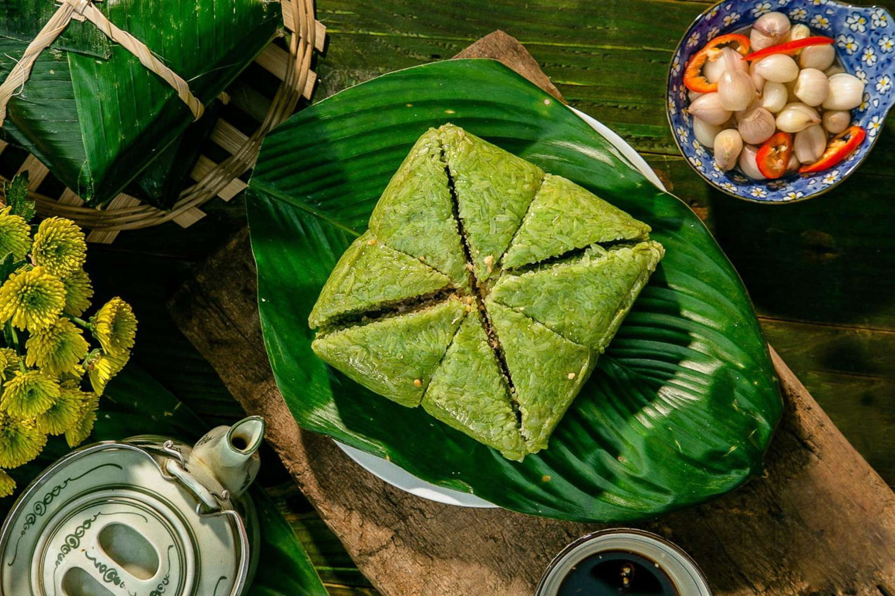
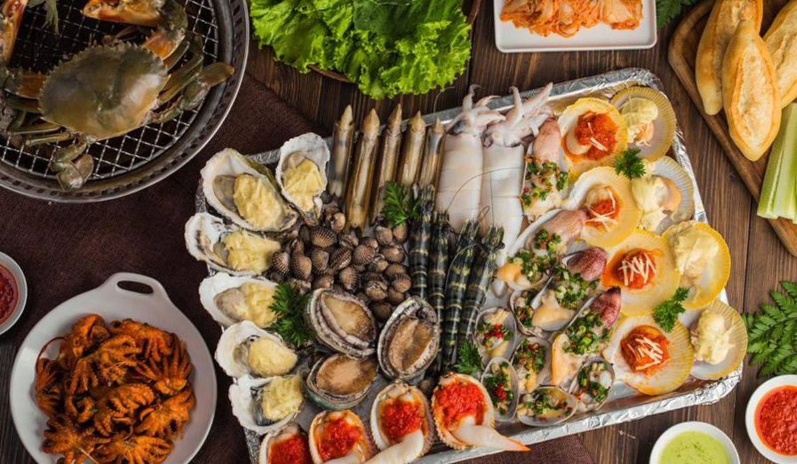
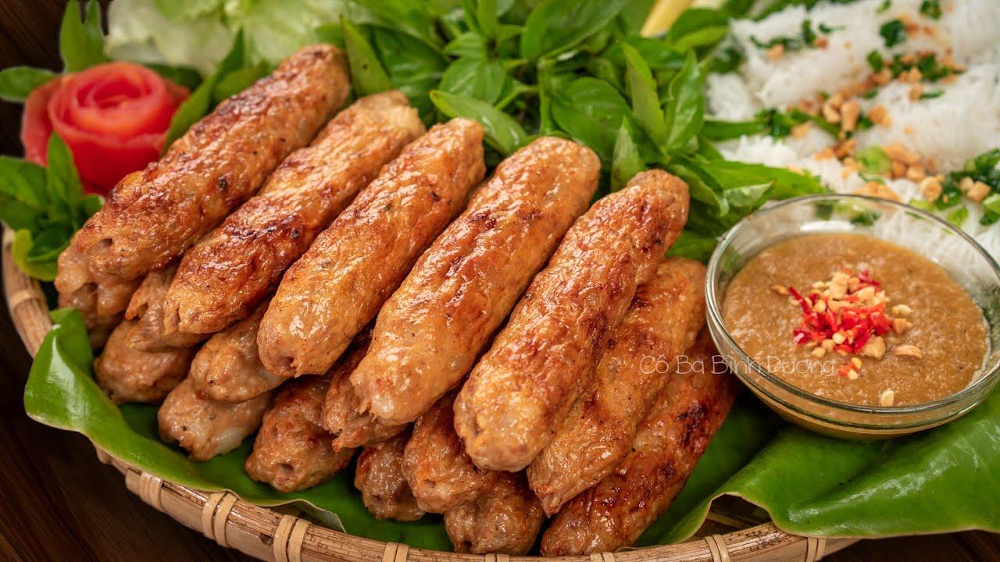

Ẩm Thực Tết Bình Thuận
Món Ăn Đặc Sản

Bánh Chưng
Món ăn truyền thống không thể thiếu trong ngày Tết, tượng trưng cho sự sum họp và may mắn.

Hải sản tươi sống
Mũi Né nổi tiếng với hải sản tươi ngon. Thưởng thức những món ngon từ biển, như cá, mực, tôm, cua…

Nem Nướng
Món ăn đường phố hấp dẫn, đậm đà hương vị, thường được thưởng thức kèm với rau sống và nước chấm.
Nhà Hàng & Quán Ăn
Dưới đây là một số nhà hàng và quán ăn nổi tiếng ở Bình Thuận, nơi bạn có thể thưởng thức các món ăn đặc sản trong dịp Tết:
- [Tên nhà hàng 1] - Địa chỉ: [Địa chỉ] - Đặc sản: [Đặc sản]
- [Tên nhà hàng 2] - Địa chỉ: [Địa chỉ] - Đặc sản: [Đặc sản]